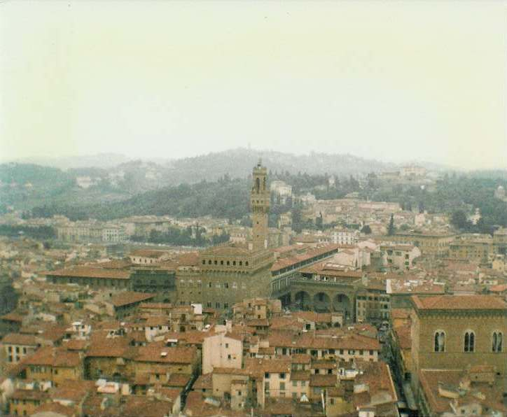

Inter Rail 1986 Day 18
Tuesday 9th September 1986
The alarm went off at 9.00am. We eventually got up, had a bite of breakfast and caught the bus down to the train
station to catch a local train to Florence. I've never seen a train go so slowly. As a result of line workings we also had to reverse and
travel on a different line!

Wandered out of Florence station and decided to give the tourist info office a miss as there was a queue of backpackers a mile long already
there. Jon having been to Florence before knew the vague direction we ought to head in, so we set off. Came across and walked through a street
market where they were selling loads of leather jackets, wallets, purses and bags along with the usual junk jewellery.
After a nice stroll we reached the Piazza del Duomo or Cathedral Square. Paid our 1500 lire and headed off into the Giotto’s Campanile or
Giotto's Bell Tower. As a result of the previous night's disturbed sleep I wasn't feeling too bright, so the 494 steps to the top had to be
taken a bit at a time. I got to the top knackered and boiling hot. Jon and Eli were already at the top and we got talking to an American guy.
He turned out to be a Genetics person called Holmquist who may be someone quite eminent! He and Jon talked evolutionary genetics for a bit
whilst Eli and I took in the views which were great. Florence is all red bricked roofs wherever you look.
Sat inside for a while to recover from my exertions and also to people watch. It was such good fun to watch the state of people as they
arrived having climbed all those steps. The weather at this point went very dark and cloudy and it eventually started raining. Then the
thunder and lightening started, and the wind started to blow a gale and the rain started coming down in sheets. We sat up top watching the
spectacular storm rage around us. Then we decided that the highest place in Florence (82m up) was not a good place to be in such a lightning
storm.
The only problem was that there were three open air bell chambers which had to be negotiated and we couldn't remember where the steps were to
get down. Jon went on an exploratory mission and got soaked to the skin! We eventually found the exit and made a dash for it. We were only out
in the open air for about 5 seconds but the gale force / wind lashed rain had us soaked to the skin. It's blooody cold standing in a tower
100ft off the ground when wearing soaking wet T-shirt and shorts. By the time we reached the lower spaces the rain had eased up a little
(ie it no longer looked like it was snowing). We were still a bit wet so we went into the Basilica di Santa Maria del Fiore which is the
cathedral church (Duomo) of Florence.
A large number of people had obviously also taken shelter from the storm in the cathedral. It was packed out. It's not very ornate inside but
there was a massive dome on which work was being done. We then moved on to the Baptistry which was much more ornate with lovely mosaics on the
walls and a ceiling including a Christ beginning to get into the sand dance posture!
Bought some pizza (by weight) and shared a large Coke and sat an chatted to an English couple. They were hoping their tent (and towels which
were on top) were still OK in their hillside campsite. They wanted to know how much it cost us for a room in Pisa. Were greatly pleased when
we said, as they had paid £20 each for a rooom in Florence the previous night.
We decided we had to have an icecream in Florence so bought a £1 lot each. I had lemon and chocolate which was so very lemony and
chocolaty it was delicious. The rain was still falling so we made a dash into the subway and then out into the railway station. The train was
due to leave at 5 o'clock ( a directo this time). General confusion arose as our train was late. Announcements flew like in Romania and we
dashed from platform to platform trying to work out where our train was. We eventually asked a little man and he told us where it was. We
finally set off only 30 minutes late.
The thunderstorm was in the Pisa area when we got back. Parts of it were under 1 inch of water! Got another 3 takeaway pizzas plus 1 for
breakfast next day. Mass tiredness ensued and a good sleep was obtained by all and sundry.